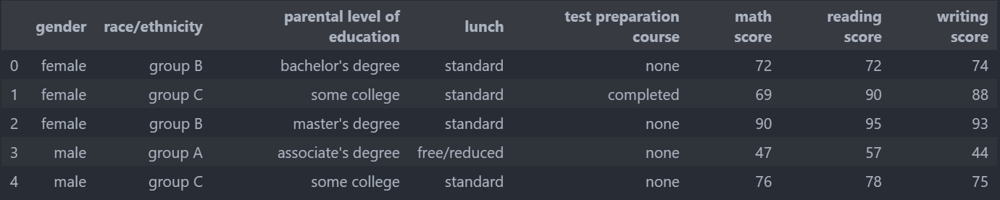
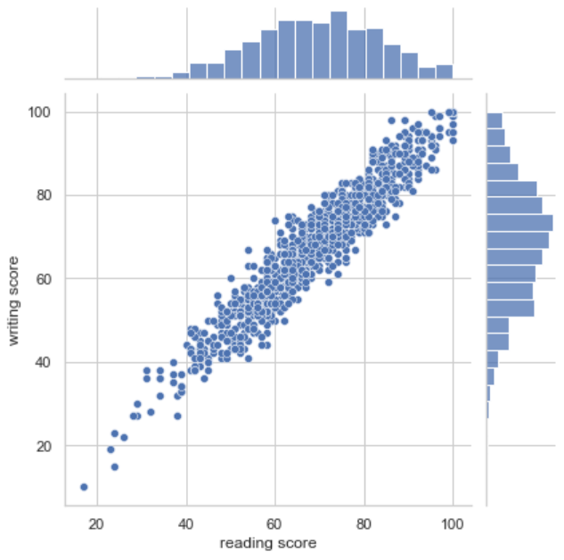
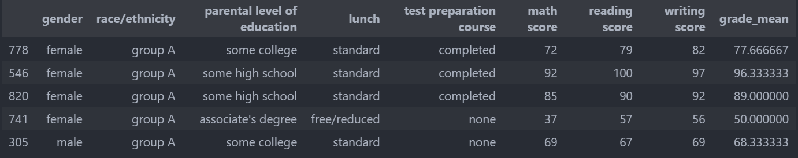
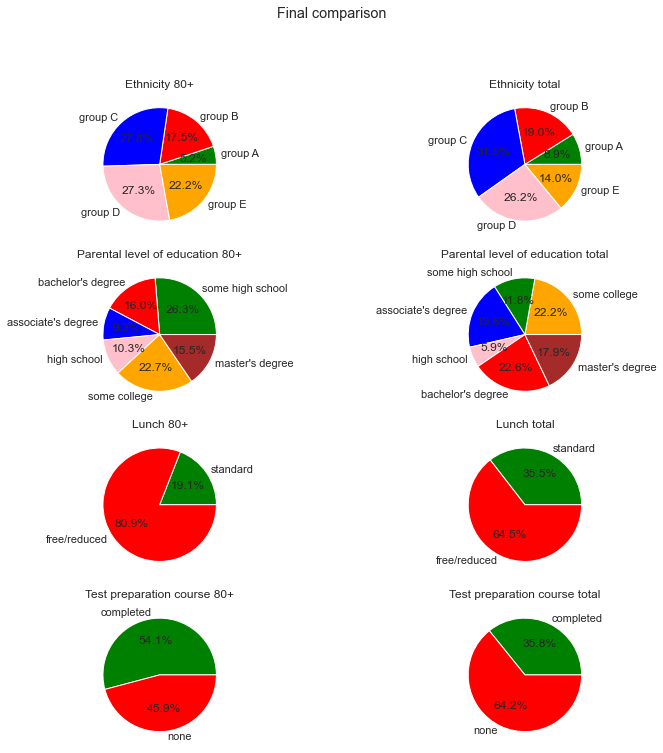

What are the student features impacting on exam success ?
For this school project we were asked to chose a dataset and work on it in a dataviz way. With my pair we chose to work on the exam success of student and we found one on Kaggle : https://www.kaggle.com/datasets/spscientist/students-performance-in-exams :
We can firstly see that there are two types of features : active, features which the individual as an impact on (lunch and test preparation), and passive, features that individuals can not change (gender, ethnicity and parental level of education). We will search which are the most impactful features, passives or actives ?
Firstly we wanted to know if there is a correlation between every test success to concatenate them in one variable, so we plotted a Scatterplot from the Seaborn libraries :
As the scatterplot shows us that there is a linear correlation between every tests, we decided to create a new column named grade_mean which is the mean of the three tests so that it will be more clear to analyze the exam success.
We can now start exploring the dataset :
It seems that there is a correlation between both of ethnicity and gender with high grade obtaining.
By plotting the grade average by lunch type and by the exam preparation, it seems that there is also a positive correlation with the exam success. But even though these features seems to improve the exam success chances, we do not know which one is the most impactful.
Indeed, we need to thin about a testimony of exam success. In that way, we wanted to study the density of the grade average :
By taking this grade average density we set that students with a higher than 80 grade average are considered as high graded students.
So to study high graded students we create a new data frame exclusively composed of students with a higher grade average
than 80.
Then we plot the same previous features plots applied on the best graded data frame :
At this point we have an interesting vision about the features repartition inside the best graded population. But we need to compare it to the total population to highlight the changes. 
This final graph shows us interesting and surprising things :
- Ethnicity :
We can see that the group E and C are more represented in the 80+ rated club than in the total population, while group A
and B decreased. Group D is more or less the same. Indeed, the ethnicity seems to have a effective impact on the exam
success.
- Parental level of education :
We can see that students who have master graduated parents are less represented in the best grades group, while students
having parents who stopped there studies after high school are much more represented than in the total population.
- Lunch :
Students who had a standard lunch before the exam are less represented in the best grades group. Even if we proved
previously that having a lunch is helping to have a better grade.
- Test preparation course :
Obviously, the students who had taken test preparation course are more represented in the best grades group.
To conclude we can say that the test preparation course got the biggest impact on the exam result. The other aspects can
admit hypothesis : the best students may also be the most stressed by the exam, which can conduct to not eat; and if the
ethnicity groups concern the wealth categories it can explain that the poorer groups can not afford test preparation.